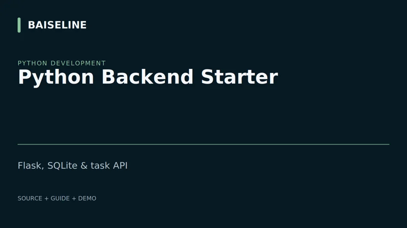
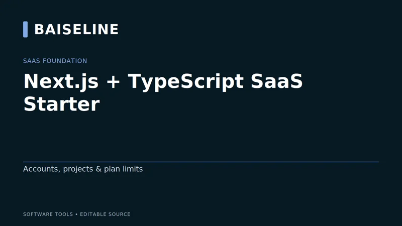
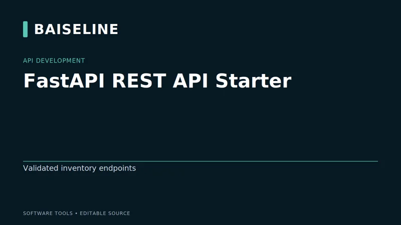
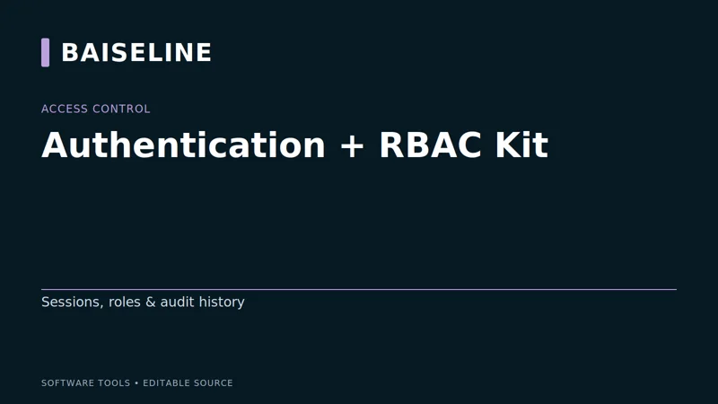
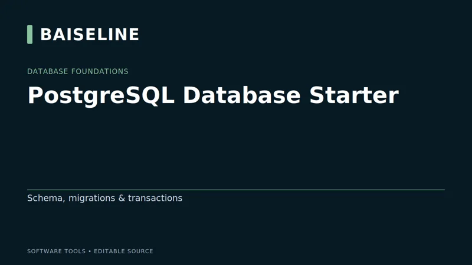
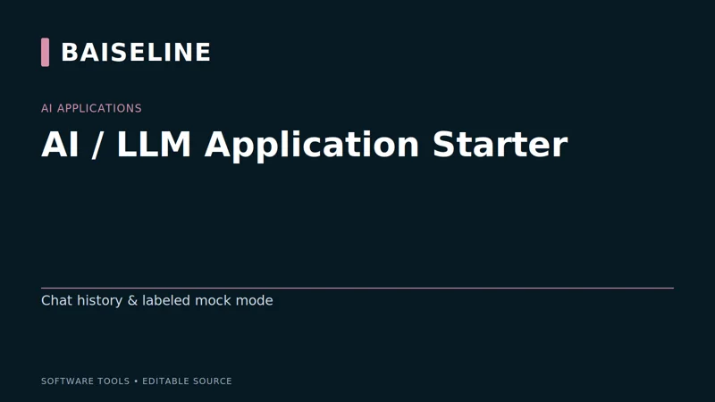
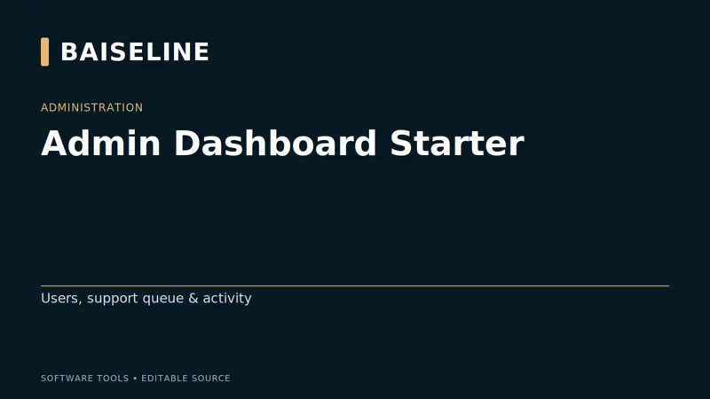
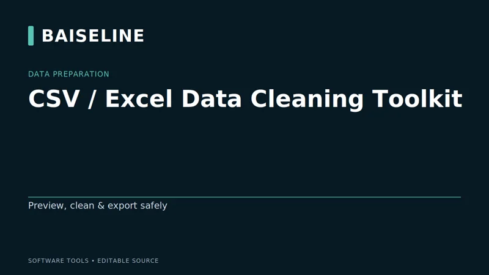
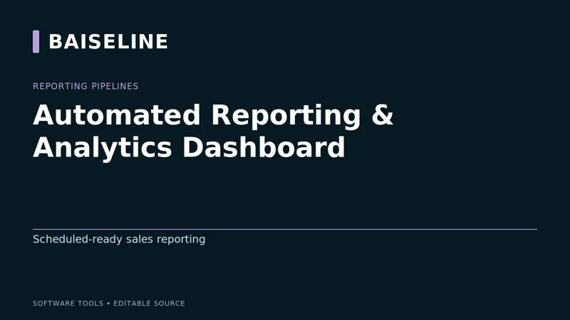
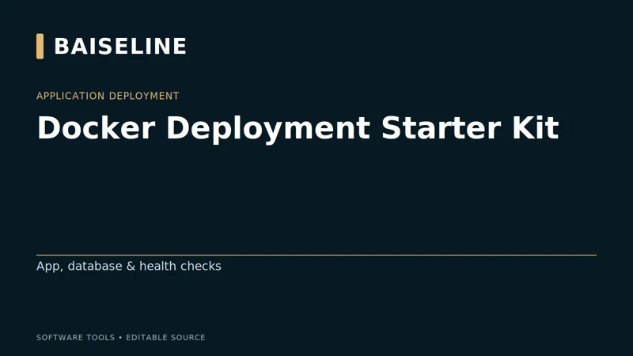

Python Backend Starter
Flask/SQLite API with sessions, roles, owned tasks, validation and a browser workbench.
DEVELOPER TOOLS. TEMPLATES. AUTOMATION.
Practical developer tools, templates, and automation built for real-world projects. From APIs and databases to dashboards and AI — documented source you can adapt to your own workflow.
from fastapi import FastAPI from routers import items, auth app = FastAPI( title="Baiseline API", version="1.0.0" ) app.include_router(items.router) app.include_router(auth.router) @app.get("/") def read_root(): return {"message": "Build Smarter."}
$ docker compose up -d ✓ api Started ✓ database Started ✓ redis Started $ pytest ================== 5 passed in 1.23s $ uvicorn main:app INFO: running on 127.0.0.1:8000
THE TOOLBOX · 20 PRODUCTS
Our storefront is hosted on Gumroad. Product links take you to our Baiseline Gumroad listing, where you can review the demo, purchase, and access your downloads. Checkout takes place on Gumroad, not on this website.

Flask/SQLite API with sessions, roles, owned tasks, validation and a browser workbench.

Start a TypeScript application with account access, owned projects and server-side plan limits.

Build an inventory API with validated requests, scoped tokens, persistence and a browser workbench.

Make permissions explicit and test protected actions, session revocation and audit events.

Start with an order-and-stock schema that uses constraints and transactions to preserve inventory and order totals.

Develop a chat interface and owned conversation history without a paid provider during local development.

Manage a persistent support queue with current counts, search, state changes and role-protected controls.

Clean repetitive CSV/XLSX issues with an explainable accepted/rejected audit while preserving input files.

Turn validated sales CSV batches into repeatable, filterable reports without double-counting identical imports.

Start a local FastAPI and PostgreSQL stack with documented containers, health checks, migrations and recovery steps.
Turn carrier data into repeatable reports and exports.
Track fleet assets, maintenance records and costs.
Review stock levels and reorder needs in one workflow.
Organize leads and track follow-up activity.
Build a practical local data-processing workflow.
Explore a customizable business dashboard with sample data.
Start a client-facing project and document workflow.
Customize a portfolio for your projects and experience.
Adapt a website template for your business.
Start a documented workflow automation project.
Guides, cheat sheets, and starter packs to help you build, learn, and ship faster.
BUILT AROUND YOUR WORKFLOW
Have a workflow that needs more than a ready-made tool? Tell us what you want to improve, the systems you use, and the outcome you need. We can discuss the scope before work begins.
Python scripts, data cleaning, repeatable reporting, and integrations that reduce repetitive manual steps.
Custom backend workflows, database design, and connections between the tools your business uses.
Reporting interfaces, admin tools, and adaptations of Baiseline starters to fit your project.
Include your goals, current workflow, and any timeline or technical requirements. Scope, availability, and pricing are agreed individually.
THE IDEA BEHIND BAISELINE
Baiseline builds practical software tools for developers, professionals, and small businesses. Our focus is simple: help people spend less time on repetitive work and more time building something useful.
From APIs and databases to automation and dashboards, our products provide editable starting points with documentation and examples. Choose a tool that matches your needs, review its requirements, and adapt it to your workflow.
Explore the Toolbox →